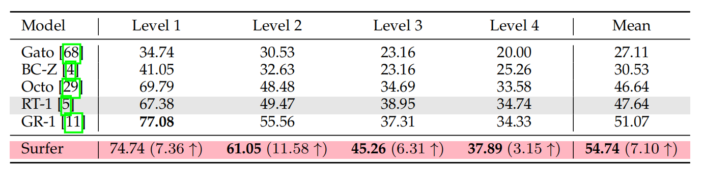
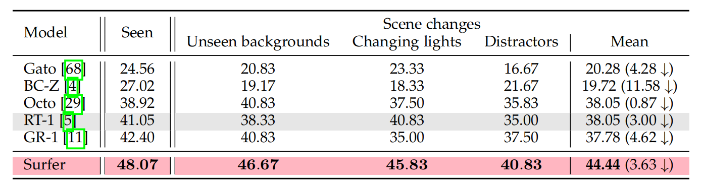

Considering how to make the model accurately understand and follow natural language instructions and perform actions consistent with world knowledge is a key challenge in robot manipulation. This mainly includes human fuzzy instruction reasoning and the following of physical knowledge. Therefore, the embodied intelligence agent must have the ability to model world knowledge from training data. However, most existing vision and language robot manipulation methods mainly operate in less realistic simulators and language settings and lack explicit modeling of world knowledge.
To bridge this gap, we introduce a novel and simple robot manipulation framework, called Surfer. It is based on the world model, treats robot manipulation as a state transfer of the visual scene, and decouples it into two parts: action and scene. Then, the generalization ability of the model on new instructions and new scenes is enhanced by explicit modeling of the action and scene prediction in multi-modal information. In addition to the framework, we also built a robot manipulation simulator that supports physics execution based on the MuJoCo physics engine. It can automatically generate demonstration training data and test data, effectively reducing labor costs.
To conduct a comprehensive and systematic evaluation of the robot manipulation model in terms of language understanding and physical execution, we also created a robotic manipulation benchmark with progressive reasoning tasks, called SeaWave. It contains 4 levels of progressive reasoning tasks and can provide a standardized testing platform for embedded AI agents in multi-modal environments. Overall, we hope Surfer can freely surf in the robot's SeaWave benchmark. Extensive experiments show that Surfer consistently outperforms all baselines by a significant margin in all manipulation tasks. On average, Surfer achieved a success rate of 54.74% on the defined four levels of manipulation tasks, exceeding the best baseline performance of 51.07%.
The overall framework of Surfer. It is a manipulation model based on the world model to simulate the physical laws of robot action execution. Sufer’s world model is mainly composed of an action prediction module and a scene prediction module. They are guided by language instructions P and predicted actions A′ respectively, helping the model learn physical laws from the robot’s historical action trajectories I.


In this section, we evaluate the performance of Surfer in progressive instruction reasoning tasks. In the SeaWave benchmark, the training and testing environments mainly include instructions and scenes (i.e.), objects, tables, spatial positional relationships, and rotation information, etc. Because the scenarios are regenerated each time, the scene is unseen for each level of task. At the time of testing, since the level 1 instructions are in the form of "verb + noun", they are seen. For levels 2, 3, and 4, human-like natural language instructions are used, so they are unseen, and the corresponding number of instructions is 80, 172, and 226, respectively.
Compared to other baselines, Surfer achieves the best manipulation success rate on almost all tasks. Specifically, compared to baseline RT-1, Surfer's manipulation success rate increased by an average of 7.1% on four levels of progressive reasoning tasks. It is worth noting that Surfer still has a 3.15% (37.89% vs. 34.74%) improvement in the most challenging level 4 tasks. In addition, compared with GR-1, which also uses scene prediction ideas, Surfer still achieved a significant improvement of 3.67% (54.74% vs 51.07%) on average on four levels of manipulation tasks. This shows that Surfer is very effective in modeling robot manipulators' perception of scene changes by world model associated action on prediction and scene prediction.
Here, we evaluate the robustness of Surfer in different scenarios using the average manipulation success rate of the model on level 2, 3, and 4 tasks. New scenarios include unseen backgrounds (i.e.), unseen tables, changing light intensity, and more distractions (i.e.), more objects. These scenarios were never seen during model training.
We found that more distractors significantly reduced the success rate of model manipulation. In particular, we find that Octo maintains the best robustness compared to other methods, which may be because it uses more training trajectories.
Overall, under various interference factors, Surfer still maintains a significant performance advantage compared to other baselines (e.g., Surfer vs RT-1: 44.44% vs 38.05%). And under three different scene changes, the average performance loss ratio of Surfer is only 8%. In comparison, the performance loss ratios of GR-1 and BC-Z reached 11% and 43%, respectively. This indicates that Surfer has good robustness with the help of the world model.
Please pick up the item that is positioned behind right.
Can you put the green bottle and the chips together?
@misc{ren2024surferprogressivereasoningworld,
title={Surfer: Progressive Reasoning with World Models for Robotic Manipulation},
author={Pengzhen Ren and Kaidong Zhang and Hetao Zheng and Zixuan Li and Yuhang Wen and Fengda Zhu and Mas Ma and Xiaodan Liang},
year={2024},
eprint={2306.11335},
archivePrefix={arXiv},
primaryClass={cs.RO},
url={https://arxiv.org/abs/2306.11335},
}